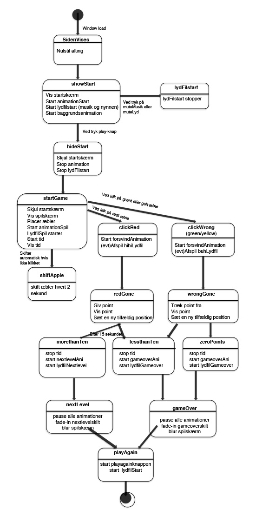
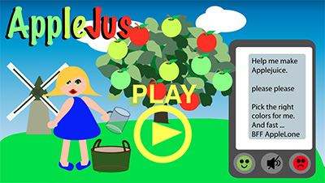
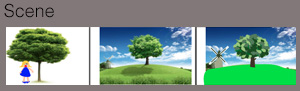
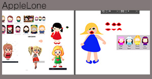

Javascript
Ja, så blev der bygget ovenpå HTML og css. Jeg har aldrig tidligere arbejdet med javascript, så det var i den grad nyt - og selvom jeg fanger logikken, har jeg godt nok bokset meget med, at få det til at virke efter hensigten.😫Da mit spil endelig lykkedes - så både timer og tæller snakkede sammen, sprang champagnepropperne i det lille hjem. 🎉 Lige indtil jeg 2 uger senere skulle vise nogle venner, hvor fabelagtig dygtig, jeg er blevet til javascript - og så måtte erfare, at tæller og timer ikke spillede sammen mere! Uden at jeg havde rørt ved noget som helst.
I dette tema fik jeg en ordentligt lærestreg i ikke at blive syg, når der undervises i javascript (og du aldrig er stødt på det før!) Jeg havde (heldigvis) valgt et rimelig enkelt spil, men blev alligevel så tidspresset, at jeg måtte prioritere delelementer fra, for at nå færdigs spil før aflevering. 
Spil
Jeg lavede dette lille spil - og blev introduceret til Adobe Illustrator, der også var nyt for mig. Jeg har lavet keyframe animation af start og i selve spillet, og testede en lille mp4 fil som slut i 'game over' - mest for at se hvordan det hele spiller sammen.  